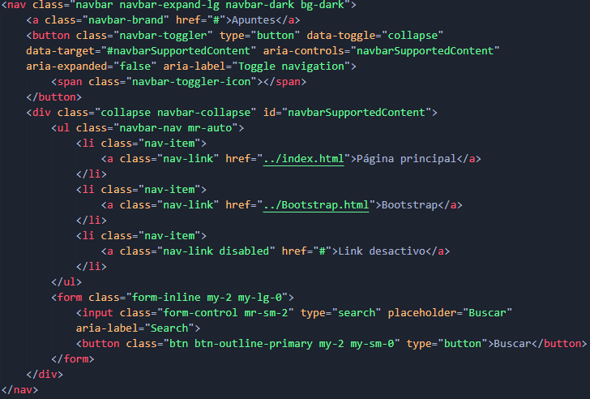

Contenido compatible:
Las barras de navegación vienen con soporte integrado para un puñado de subcomponentes:
- .navbar-brand:
- Para el nombre de empresa, producto o proyecto. (Tambien puede incluir la imagen)
- .navbar-nav:
- Para una navegación liviana y de altura completa (incluido soporte para menús desplegables).
- .navbar-toggler:
- Para uso en dispositivos angostos, este complemento oculta la barra de navegación y muestra en su lugar un botón de hamburguesa a la izquierda o derecha, el cual al ser presionado se despliegan las opciones del menú de barra en forma vertical.
- .form-inline:
- Para cualquier control y acción de formulario.
- .navbar-text:
- Para agregar cadenas de texto centradas verticalmente.
- .collapse.navbar-collapse:
- Para agrupar y ocultar el contenido de la barra de navegación cuando el dispositivo sea pequeño.
